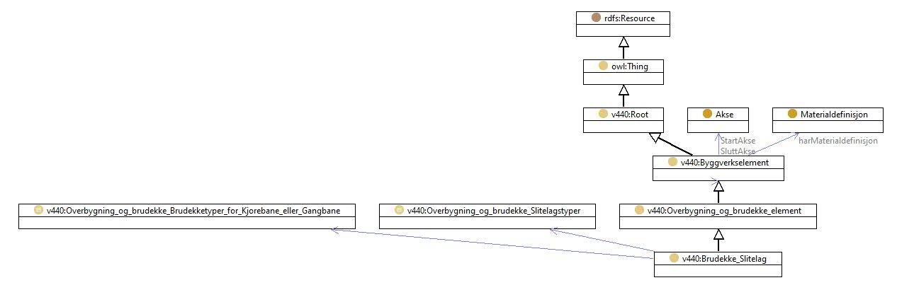

https://ontologi.atlas.vegvesen.no/v440/core/v440-owl#Brudekke_Slitelag
Class v440:Brudekke_Slitelag

rdf:type
owl:Class
rdfs:label
Brudekke Slitelag
Bridge deck wear layer
rdfs:subClassOf
harSlitelagstype
exactly 1
harBrudekkeType
exactly 1
v440:Overbygning_og_brudekke_element
owl:disjointUnionOf
[
v440:Brudekke_Slitelag_Slitelag_i_kulvert
,
v440:Brudekke_Slitelag_Slitelag_fuktisolasjon
,
v440:Brudekke_Slitelag_Kantdrager
,
v440:Brudekke_Slitelag_Pahengt_gangbane
,
v440:Brudekke_Slitelag_Brudekke_sek_baeresystem
,
v440:Brudekke_Slitelag_Annet_brudekkeelement
]
v440:avsnitt
V-7.E
v440:kapittel
V-7
v440:kode
E
References
as owl:disjointUnionOf (
v440:Overbygning_og_brudekke_element
)
as rdfs:subClassOf (
v440:Brudekke_Slitelag_Slitelag_i_kulvert
,
v440:Brudekke_Slitelag_Slitelag_fuktisolasjon
,
v440:Brudekke_Slitelag_Pahengt_gangbane
,
v440:Brudekke_Slitelag_Kantdrager
,
v440:Brudekke_Slitelag_Brudekke_sek_baeresystem
,
v440:Brudekke_Slitelag_Annet_brudekkeelement
)
Generated with
TopBraid Composer
by
TopQuadrant, Inc.